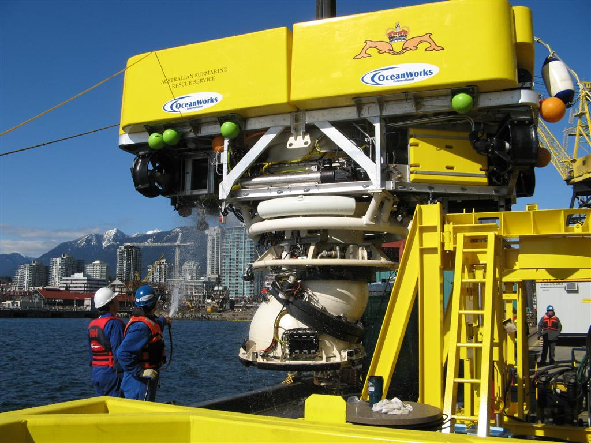

Sample Military Projects
Turkish Navy Submarine Rescue Program
The Turkish Navy has embarked on developing an extensive submarine rescue capability by building 3 dedicated ships, fully outfitted to support submarine escape and rescue activity as well as to expand search and salvage capability.
OceanWorks International was selected by the Navy’s prime subcontractor, Istanbul Shipyard, to provide submarine rescue, intervention and diving systems to outfit the 3 vessels. The scope of work includes provision of multiple sets of submarine rescue intervention systems, saturation and surface mixed gas diving systems and hyperbaric chambers. Also included are associated ship interface templates to support the NATO NSRS system.
OceanWorks was also contracted to provide all associated ship interface, installation, and acceptance testing for the interface to each vessel.
U.S. Navy SRDRS Submarine Rescue System
.JPG)
OceanWorks was selected by the US Navy as the prime contractor for the design, construction and testing of numerous Submarine Rescue Diving Recompression System (SRDRS) elements. The contract work scope included: the Pressurized Rescue Module System (PRMS) submarine rescue vehicle “FALCON”; the HARDSUIT™ 2000 Atmospheric Diving System - part of the Advanced Underwater Work Systems (AUWS); the Launch and Recovery Systems (LARS) for the PRMS and HARDSUIT™; the containerized control systems; the umbilical winch system and other auxiliary support equipment. These elements, when combined with other containerized accessories, form the US Navy’s comprehensive SRDRS Rescue Capable System (RCS). The PRMS FALCON replaces the previous US submarine rescue assets - DSRV Mystic and DSRV Avalon.
The PRMS is the world's most advanced and capable submarine rescue system and is a tethered, remotely operated system with articulated mating skirt technology, pioneered by OceanWorks. It can carry up to 18 personnel during each mating cycle with a Distressed Submarine (DISSUB) and mates to transfer under pressure and treatment facilities on the surface vessel. It has proven ability to perform rapid and repeated mating cycles with many different submarine types and has demonstrated fly away capabilities by being flown to support several international rescue exercises around the world on multiple vessels of opportunity.
Since delivery of the systems in 2007, OceanWorks has been heavily involved with the ongoing support for the U.S. Navy's submarine rescue operators, the Undersea Rescue Command (URC) and Naval Sea Systems Command (NAVSEA). OceanWorks is one of only 8 civilian organizations in the world certified to perform Deep Submergence Systems Scope of Certification Work.
Royal Australian Navy REMORA Submarine Rescue System

OceanWorks is the OEM and designer of the Australian Submarine Rescue Vehicle (ASRV) REMORA, the worlds first Remotely Operated Rescue Vehicle (RORV) and the first to feature the OceanWorks patented articulating mating skirt. REMORA is a 16.5 tonne vehicle with room for seven people, the operator/attendant and six survivors. It is capable of operations in excess of 500m in a current of 3 knots and of mating to a sunken submarine lying at angles of up to 60° from the vertical. Rescue and transfer under pressures of up to 5 Bar is achieved through mating to a Transfer Under Pressure chamber that is connected by spool pieces to recompression chambers. The vehicle is powered and controlled through an armoured electro-fibre optic umbilical which provides power to two 75hp hydraulic power units.
Unlike untethered (free swimming) rescue submersibles, the revolutionary REMORA tethered vehicle design introduced remotely operated vehicle technology to the area of submarine rescue. This innovative approach allowed, for the first time, clear and continuous, reliable, two-way , voice, life support, video, navigational and other data communications to be maintained with the surface team during a subsea operation. This OceanWorks RORV technological approach was adopted by the U.S. Navy as its preferred approach for their future SRDRS submarine rescue system program and vehicle, the PRMS Falcon.